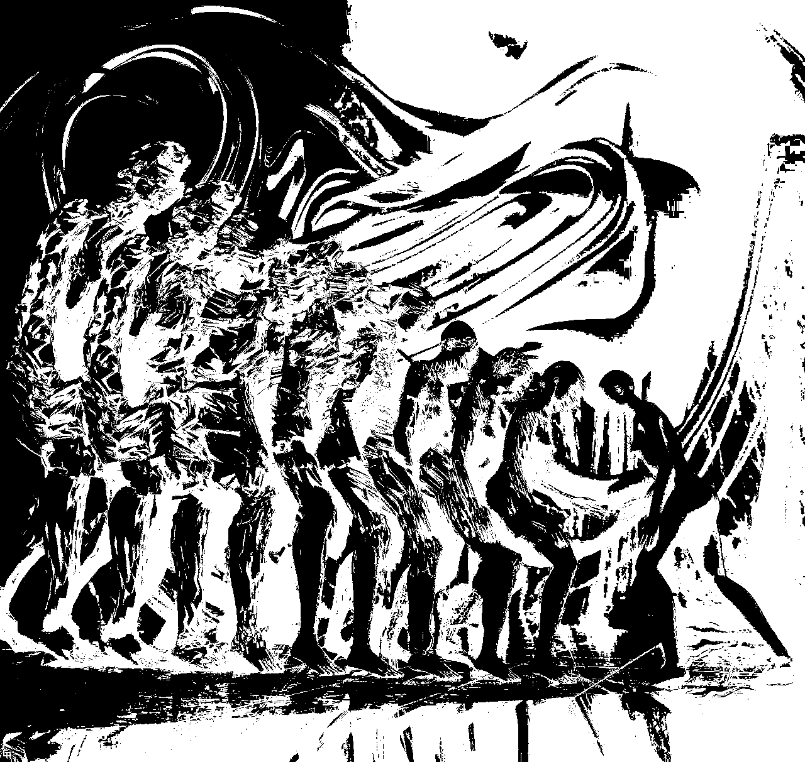

Этот текст будет дополнен.
Хоть бы он не превратился в сборище сшитых заплаток инородных текстов, пусть сочотся мисинтерпретацией, нежели мисреализацией.
Есть места, где всё двоится и расщепляется. Обычному глазу они не заметны, но есть несколько примет их различающие: например, стоят дома по такой-то улице, а у них у всех один номер. Фрагменты улицы, детских площадок, повторяются, будто сгенерированные. Город идей, сны без восприятия таковости. Люди, проходя подобные места, часто ощущают себя неуютно и растерянно: словно расщепляются, их раздирают разные стремления и чувства, для предотвращения которых сворачиваются в клубок, дабы полностью не потерять самого себя. Порой бывает очень трудно потом снова собраться в одного целого себя. Такие места могут быть полезны: например, если хочешь избавиться от прицепыша, который прилип к тебе так, что начинаешь не различать своё от чужого. Нужно прийти в такое место, во время своего расслоения -- отделить ненужное и быстро уйти. Главное, успеть спаяться в одно целое до тех пор, пока брошенное тебя не успело догнать. Одежда помогает в защите от инородного. Во снах одежда играет роль знака, а не защиты от холода. Во сне нет холода ровно как и погоды вообще, но присутствует их знак, интерпретация которого категорически необходима для правильного понимания (мисинтерпретация происходит на уровне развития и интимной близости человека к сакральному). Люди во снах скорее окутываются в себя, прячутся во внутрь, порождая собой пучки невоспринимаемых ощущений.
Расслоение ассоциируется с выворачиванием наизнанку всех сложностей, одновременно их склеивая другими.
Есть уровни абсолютной тьмы, выглядывающей бездны, находящейся за стабилизированным листком спектральной секвенции произвольного расслоения в которых ориентация возможно только благодаря памяти. За пределами омеги находится забытие и небытие. Забытие происходит от слова забыть, за бытием, вне бытия. Потерять память не есть единство с обьективностью, а есть единство с истинной трансцедентной бездной. Каждый имеет свою конфигурацию восприятия потоков запредельного, но в основном на пространство наложен фильтр, сквозь раны которого можно всмотреться только максимально рассеянным взглядом. Есть даже режим интерпретации этих потоков, основанных на чистейшем ужасе, если воспринимать его как первопричинность восприятия бытия.
Один из режимов анализирования пространства психофизики заключается в построении необходимых спектральных последовательностей взаимосвязи ноэмы и ноэзы восприятия непознаваемой истинной глубинной реальности.
Расслоение
Основная идея параметризации одного топологического пространства другим заключается в концепции расслоения. Формально, расслоение есть выкрученное произвдение базы топологического пространства с его волокнами, покрытиями. Обозначается расслоение тройкой $F \ri E \rs B$.
Спектра
Есть гомологический стержень, на котоорое насаживается сложность. Затем происходит преобразование производным ветром. После разбрасывания ветром бесконечной силы, оставшиеся румяные обьекты и собираются в остово всей насаженной сложности. Кроме него там ничего и не остаётся, вся сложность размывается на многомерные гранулы, если они выхватывается, осознаётся всё распределение неявного.
Для вычисления (ко)гомологической структурности пространства в первую очередь определяется последовательность цепных комплексов вида $$ \ldots \xra{\gb_{d+2}} C_{d+1} \xra{\gb_{d+1}} C_{d} \xra{\gb_{d}} C_{d-1} \xra{\gb_{d-1}} \ldots $$
Каждое звено которого есть свободная группа линейных трансформаций $d-1$-мерной грани $CW/\Delta$-комплекса. Соответственно их можно градуировать на прямую сумму цепных подкомплексов $$ C_d = \bigoplus_{p=1}^{n} C_{d,p} $$
Теорема о фильтрации заключается в том, что существует градуированная фильтрация цепного комплекса $$ 0 = C_{d,0} \subseteq C_{d,1} \subseteq \ldots \subseteq C_{d,n} = C_{d} $$
Один из примеров фильтрации заключается в наделении пространства X CW-структурой вида $$ 0 \subseteq X^0 \subseteq X^1 \subseteq \ldots \subseteq X^n = X $$
Что можно переписсать в последовательность фильтраций свободной группы F (Определение которой будет приведено ниже) вида $$ 0 \subseteq F^0X \subseteq F^1X \subseteq \ldots \subseteq F^nX = X $$
Имеется соответствующий градуированный модуль $F^iX/F^{i-1}X$ как остаточная открытая $i$-ячейка.
Следует помнить, что данная фильтрация может не быть цепным комплексом, предотвращая построение многомерных спектральных последовательностей. Также, фильтрация порождают длинные точные относительные последовательности гомологий так как это и делают в случае с относительными пространствами, точнее имеем длинную точную последовательность вида
При $F^{i-1} \subset F^i$ $$ \ldots \ra H_{k+1}(F^i/F^{i-1}) \ra H_k(F^{i-1}) \ra H_k(F^i) \ra H_k(F^i/F^{i-1}) \ra H_{k-1}(F^{i-1}) \ra \ldots $$
При $F^i \subset F^{i+1}$ $$ \ldots \ra H_{k+1}(F^{i+1}/F^i) \ra H_k(F^{i}) \ra H_k(F^{i+1}) \ra H_k(F^{i+1}/F^i) \ra H_{k-1}(F^i) \ra \ldots $$
При $F^{i+1} \subset F^{i+2}$ $$ \ldots \ra H_{k+1}(F^{i+2}/F^{i+1}) \ra H_k(F^{i+1}) \ra H_k(F^{i+2}) \ra H_k(F^{i+2}/F^{i+1}) \ra H_{k-1}(F^{i+1}) \ra \ldots $$
Для определения спектральной последовательности необходимо ввести понятие тотального цепного комплекса. Рассмотрим длинную точную последовательность цепных комплексов, приведённых выше на первом двойного комплекса $(1)$ $$ \begin{array}{ccc} \vdots & & \vdots & & \vdots & & \vdots \\ \xda{d_{0,4}} & & \xda{-d_{1,4}} & & \xda{d_{2,4}} & & \xda{-d_{3,4}} \\ C_{0,3} & \xla{\gd_{1,3}} & C_{1,3} & \xla{\gd_{2,3}} & C_{2,3} & \xla{\gd_{3,3}} & C_{3,3} & \xla{\gd_{4,3}} & \ldots \\ \xda{d_{0,3}} & & \xda{-d_{1,3}} & & \xda{d_{2,3}} & & \xda{-d_{3,3}} \\ C_{0,2} & \xla{\gd_{1,2}} & C_{1,3} & \xla{\gd_{2,2}} & C_{2,2} & \xla{\gd_{3,2}} & C_{3,2} & \xla{\gd_{4,2}} & \ldots \\ \xda{d_{0,2}} & & \xda{-d_{1,2}} & & \xda{d_{2,2}} & & \xda{-d_{3,2}} \\ C_{0,1} & \xla{\gd_{1,1}} & C_{1,1} & \xla{\gd_{2,1}} & C_{2,1} & \xla{\gd_{3,1}} & C_{3,1} & \xla{\gd_{4,1}} & \ldots \\ \xda{d_{0,1}} & & \xda{-d_{1,1}} & & \xda{d_{2,1}} & & \xda{-d_{3,1}} \\ C_{0,0} & \xla{\gd_{1,0}} & C_{1,0} & \xla{\gd_{2,0}} & C_{2,0} & \xla{\gd_{3,0}} & C_{3,0} & \xla{\gd_{4,0}} & \ldots \\ \end{array} $$
Заметим наличие минуса у дифференциалов нечётных столбцов, подчёркивающие антикоммутативность выведенных диаграмм ($d\gd + \gd d = 0$). Доказательство антикоммутативности проявится естественно в ходе построения спектральных последовательностей. Диффернциалы $d$ имеют биградус $(0,-1)$ (направленные влево), $\gd$ имеет биградус $(-1,0)$ (направленные вниз) с соответствующим свойством $d = 0 = \gd$ и свойством антикоммутативности. Структурность тотального комплекса "в данный момент" же есть градуирование вида $$ Total(C)_n = \bigoplus_{i + j = n} C_{i,j} $$
Т.е. сумма всех звеньев по диагонали, сумма индексов которых равна $n$. Дифференциал тотального комплекса определён следущим образом $$ D_n : Total(C)_n \ra Total(C)_{n-1}\\ D_n = \Sigma_{i+j=n} (d_{i,j} + \gd_{i,j}) $$
К примеру: можно построить тотальный комплекс из двух произвольных цепных комплексов $$ \begin{array}{ccc} \ldots & \xra{ d_{n+2}} & A_{n+1} & \xra{ d_{n+1}} & A_n & \xra{ d_n} & A_{n-1} & \xra{ d_{n-1}} & \ldots \\ \ldots & \xra{\gd_{n+2}} & B_{n+1} & \xra{\gd_{n+1}} & B_n & \xra{\gd_n} & B_{n-1} & \xra{\gd_{n-1}} & \ldots \end{array} $$
Соответственно их оттензорив и получив двойной комплекс вида $$ \begin{array}{ccc} \vdots & & \vdots & & \vdots & & \vdots \\ \xda{\io\ot\gd_4} & & \xda{\io\ot\gd_4} & & \xda{\io\ot\gd_4} & & \xda{\io\ot\gd_4} \\ A_0 \ot B_3 & \xla{d_1\ot\io} & A_1 \ot B_3 & \xla{d_2\ot\io} & A_2 \ot B_3 & \xla{d_3\ot\io} & A_3 \ot B_3 & \xla{d_4\ot\io} & \ldots \\ \xda{\io\ot\gd_3} & & \xda{\io\ot\gd_3} & & \xda{\io\ot\gd_3} & & \xda{\io\ot\gd_3} \\ A_0 \ot B_2 & \xla{d_1\ot\io} & A_1 \ot B_2 & \xla{d_2\ot\io} & A_2 \ot B_2 & \xla{d_3\ot\io} & A_3 \ot B_2 & \xla{d_4\ot\io} & \ldots \\ \xda{\io\ot\gd_2} & & \xda{\io\ot\gd_2} & & \xda{\io\ot\gd_2} & & \xda{\io\ot\gd_2} \\ A_0 \ot B_1 & \xla{d_1\ot\io} & A_1 \ot B_1 & \xla{d_2\ot\io} & A_2 \ot B_1 & \xla{d_3\ot\io} & A_3 \ot B_1 & \xla{d_4\ot\io} & \ldots \\ \xda{\io\ot\gd_1} & & \xda{\io\ot\gd_1} & & \xda{\io\ot\gd_1} & & \xda{\io\ot\gd_1} \\ A_0 \ot B_0 & \xla{d_1\ot\io} & A_1 \ot B_0 & \xla{d_2\ot\io} & A_2 \ot B_0 & \xla{d_3\ot\io} & A_3 \ot B_0 & \xla{d_4\ot\io} & \ldots \\ \end{array} $$
Можно также отфильтровать тотальный комплекс $F^*_nTotal(C)$ благодаря удалению всех строк или столбцов кроме $n$, на примере вертикальной фильтрации $F^v_1 \subseteq F^v_2 Total(C) / F^v_1 Total(C) $ приведенной выше диаграммы $(1)$, где $F^v_2 Total(C)$ есть все колонки включая первую $$ \begin{array}{ccc} \vdots & & \vdots & & \vdots & & \vdots \\ \da & & \da & & \xda{d_{2,4}} & & \da \\ 0 & \la & 0 & \la & C_{2,3} & \la & 0 & \la & \ldots \\ \da & & \da & & \xda{d_{2,3}} & & \da \\ 0 & \la & 0 & \la & C_{2,2} & \la & 0 & \la & \ldots \\ \da & & \da & & \xda{d_{2,2}} & & \da \\ 0 & \la & 0 & \la & C_{2,1} & \la & 0 & \la & \ldots \\ \da & & \da & & \xda{d_{2,1}} & & \da \\ 0 & \la & 0 & \la & C_{2,0} & \la & 0 & \la & \ldots \\ \end{array} $$
Антидиагональное градуирование в данном случае наследуется соответственно. Любой модуль можно изолировать благодаря градуированию каждой колонки вида $$ C^gr_{i,j-i} = (\frac{F^v_i Total(C)}{F^v_{i-1} Total(C)})_{j-i} $$ Перефразируя, каждый элемент цепи $C_{p,q}$ сохраняет своё градуирование $p + q = n$. Заметив, что горизонтальная фильтрация тривиальна, то дифференциал $D$ становится равен $d$ по формуле, приведённой выше. Соответственно, если отфильтрованная колонка тоже точна, то последний лист спектральной последовательности $E^\infty$ тоже тривиален.
С горизонтальной фильтрацией $F^h_2 Total(C)$ всё выстраивается подобным образом $F^h_1 \subseteq F^h_2 Total(C) / F^h_1 Total(C)$ $$ \begin{array}{ccc} \vdots & & \vdots & & \vdots & & \vdots \\ \da & & \da & & \da & & \da \\ 0 & \la & 0 & \la & 0 & \la & 0 & \la & \ldots \\ \da & & \da & & \da & & \da \\ C_{0,2} & \xla{\gd_1} & C_{1,2} & \xla{\gd_2} & C_{2,2} & \xla{\gd_3} & C_{3,2} & \xla{\gd_4} & \ldots \\ \da & & \da & & \da & & \da \\ 0 & \la & 0 & \la & 0 & \la & 0 & \la & \ldots \\ \da & & \da & & \da & & \da \\ 0 & \la & 0 & \la & 0 & \la & 0 & \la & \ldots \\ \end{array} $$
Также и наследуется градуирование произвольной строки $$ C^gr_{i-j,j} = (\frac{F^h_j Total(C)}{F^h_{j-1} Total(C)})_{j-i} $$ Соответственно дифференциал тотального комплекса $Total(C)$ становится равным $\gd$.
Для построения спектральных последовательностей используются точные пары. Для начала возьмём последовательность цепных комплексов, имеющих вид $$ \begin{array}{ccc} \ldots & \xra{\gg} & H_{n+1}(X_{p-1}) \\ & & \xda{\ga} \\ \ldots & \xra{\gg} & H_{n+1}(X_p ) & \xra{\gb} & H_{n+1}(X_p,X_{p-1}) & \xra{\gg} & H_n(X_{p-1}) \\ & & \xda{\ga} & & & & \xda{\ga} \\ \ldots & \xra{\gg} & H_{n+1}(X_{p+1}) & \xra{\gb} & H_{n+1}(X_{p+1},X_p) & \xra{\gg} & H_n(X_p ) & \xra{\gb} & H_n(X_p,X_{p-1}) & \xra{\gg} & H_{n-1}(X_{p-1}) & \ra & \ldots \\ & & \xda{\ga} & & & & \xda{\ga} & & & & \xda{\ga} \\ \ldots & \xra{\gg} & H_{n+1}(X_{p+2}) & \xra{\gb} & H_{n+1}(X_{p+2},X_{p+1}) & \xra{\gg} & H_n(X_{p+1}) & \xra{\gb} & H_n(X_{p+1},X_p) & \xra{\gg} & H_{n-1}(X_p) & \ra & \ldots \\ & & & & & & \xda{\ga} & & & & \xda{\ga} \\ & & & & & & H_n(X_{p+2}) & \xra{\gb} & H_n(X_{p+2},X_{p+1}) & \xra{\gg} & H_{n-1}(X_{p+1}) & \ra & \ldots \\ & & & & & & & & & & \xda{\ga} \\ & & & & & & & & & & H_{n-1}(X_{p+2}) & \ra & \ldots \end{array} $$
Вертикальные отображения выведены из естественности функтора $H_*(-)$, примеённого к соответствующей фильтраций $$ \ldots \subseteq X_{p-1} \subseteq X_p \subseteq X_{p+1} \subseteq \ldots $$
Также подчеркнём, что $\ga$ имеет биградус $(1,-1)$, $\gb$ имеет биградус $(0,0)$, $\gg$ имеет биградус $(-1,0)$.
Обозначим биградуированный комплекс следущим образом $$ E = \bigoplus_{p,q} H_{p+q}(X_p,X_{p-1}) \;\;\; A = \bigoplus_{p,q} H_{p+q}(X_p) $$
Где $p$ -- градус фильтрации, а $q$ -- градус полноты, выводимые из уравнения $n = p + q$. Следовательно вышеприведённый комплекс, сохраняя градуирование, можно переписать следущим образом. $$ \begin{array}{ccc} \ldots & \xra{\gg} & H_{p-1,q+2}(X_{p-1}) \\ & & \xda{\ga} \\ \ldots & \xra{\gg} & H_{p,q+1}(X_p ) & \xra{\gb} & H_{p,q+1}(X_p,X_{p-1}) & \xra{\gg} & H_{p-1,q+1}(X_{p-1}) \\ & & \xda{\ga} & & & & \xda{\ga} \\ \ldots & \xra{\gg} & H_{p+1,q}(X_{p+1}) & \xra{\gb} & H_{p+1,q}(X_{p+1},X_p) & \xra{\gg} & H_{p,q}(X_p ) & \xra{\gb} & H_{p,q}(X_p,X_{p-1}) & \xra{\gg} & H_{p-1,q}(X_{p-1}) & \ra & \ldots \\ & & \xda{\ga} & & & & \xda{\ga} & & & & \xda{\ga} \\ \ldots & \xra{\gg} & H_{p+2,q-1}(X_{p+2}) & \xra{\gb} & H_{p+2,q-1}(X_{p+2},X_{p+1}) & \xra{\gg} & H_{p+1,q-1}(X_{p+1}) & \xra{\gb} & H_{p+1,q-1}(X_{p+1},X_p) & \xra{\gg} & H_{p,q-1}(X_p) & \ra & \ldots \\ & & & & & & \xda{\ga} & & & & \xda{\ga} \\ & & & & & & H_{p+2,q-2}(X_{p+2}) & \xra{\gb} & H_{p+2,q-2}(X_{p+2},X_{p+1}) & \xra{\gg} & H_{p+1,q-2}(X_{p+1}) & \ra & \ldots \\ & & & & & & & & & & \xda{\ga} \\ & & & & & & & & & & H_{p+2,q-3}(X_{p+2}) & \ra & \ldots \end{array} $$
Отсюда имеем следущую точную пару, представленного пятёркой $(E,A,\ga,\gb,\gg)$ $$ \ldots \xra{\gg} A \xra{\ga} A \xra{\gb} E \xra{\gg} A \xra{\ga} \ldots $$
Соответствующая следущим условиям соответственно $$ Ker_\ga = Im_\gg \;\;\; Ker_\gb = Im_\ga \;\;\; Ker_\gg = Im_\gb $$ С фильтрами всё в том же духе. Следует также помнить, что в общем случае вертикальные и горизонтальные гомологии тотального комплекса $Total(C)$ не обязательно должны быть сводимы, это исходит из того, что при их вычислении испоьзуются разного рода фильтрации, что будет приведено в примере после построения спектральных последовательностей.
Лист спектралки $E_1$ определяется к сумма всех ячеек данного листа $$ E^1 = \bigoplus_{p,q} E^1_{p,q} $$
Дифференциал на данном листе можно орпеделить двумя способами, вертикальный дифференциал $d^v : E^1 \ra E^1$ (далее просто $d$) есть композиция $d = \gb \circ \gg$. Лист $E^2$ определяется как гомология листа $E^1$ следущим образом $$ E^2_{p,q} = \frac{Ker \: d_{p,q}}{Im \: d_{p+1,q}} $$ Несложно проверить, что дифференциал $d$ листа $E^1$ имеет биградус $(-1,0)$, полученный сложением биградусов его фактор морфизмов соответственно. Проитерировав комплексы $A$ и $E$ до второго листка мы имеем $A^2 = Im \ga$ и $\gb^2a = [\gb\ga^{-1}a], a \in A^2$ с биградусом $(-1,1)$, взятый как класс из $E^1$. Таким же образом определяем $\gg^2[e] = \gg e, e \in E^1$ со стабильным биградусом $(-1,0)$. Дифференциал листка $E^2$ соответственно имеет биградус $(-2,1)$. Для наглядности ниже приведена точная пара второго порядка и их элементы $$ \ldots \xra{\gg^2} (A^2 = Im \: \ga)(\gg e) \xra{\ga^2} A^2 (a) \xra{\gb^2} E^2 ([\gb\ga^{-1}a] = [e]) \xra{\gg^2} \ldots $$ Отсюда по индукции на произвольной итерации $r$, единственное отображение $\gb$ имеет нестабильный биградус вида $(1-r,r-1)$. Данный процесс можно итерировать до листа $E^\infty$. Если бесконечный лист спектралки равен нулю, то выводится развёртывание некоторых нетривиальных отношений между ними на примере леммы о змейке или 5-лемме. Любые спектральные последовательности имеют прекрасное свойство сводимости, необходимое для вычисления соответствующей (ко)гомологической структурности данного пространства $X$.
Для полного построения спектральных последовательностей необходимо ввести ещё несколько соответствующих определений. Для начала приведём пример возрастающей фильтрации вида $$ 0 \subset F^0X \subset F^1X \subset \ldots \subset F^{p-r} \subset \ldots \subset F^{p-1}X \subset F^pX \subset \ldots \subset F^nX = X $$ Факторизация градуированного модуля также является разделимой $\bigcap F^pX = 0$ и исчерпывающей $\bigcup F^pX = X$. Фильтрированный дифференциальный градуированный $R$ модуль $X$ есть модуль с дифференциалом $d : X^n \ra X^{n-1}, \; d^2 = 0\; deg \: d = -1, \; dF^pX \subset F^p A$. Т.к. дифференциал сохраняет фильтрацию, то также наделяется свойство гомологий, приводя фильтрацию над ними к виду $F^pH = Im(HF^p \ri H)$. Далее необходимо доказать главную теорему о построении спектральных последовательностей, имеющую следущий вид
Thm (Leray): При наличии пространства $X_i$, отфильтрованного его семейством подпространств ($0 \subset X_0 \subset \ldots \subset X_n = X$), тогда существуют страницы $E^r_{p,q}, \; r \geq 0$ и соответствующий гомоморфизм $d^r_{p,q} : E^r_{p,q} \ra E^r_{p+r,q-r+1}, \; d^r_{p+r,q-r+1} \circ d^r_{p,q} = 0, \; deg \: d^r = (-r,r-1)$, такой, что $$ E^r_{p,q} = \frac{Ker \: d^r_{p,q}}{Im \: d^r_{p-r,q+r-1}} = H_{p+q}(E^{r-1}_{p,q}) \\ E^\infty_{p,q} = \frac{Ker(H_{p+q}X \ra H_{p+q}X_{p-1})}{Ker(H_{p+q}X \ra H_{p+q}X_p)} \\ E^0_{p,q} = C_{p+q}(X_p,X_{p-1}) $$
Для доказательства вышеприведённой теоремы, начнём с определения приблизительных циклы $Z^r_{p,q}$, что по себе есть модуль с отображением лежащим в $F^{p-r}$, соответственно факторизировав по нему, можно получить канонические циклы $$ Z^r_{p,q} = \{z \in F^PX^{p+q} : dz \in F^{p-r}X^{p+q-1}\} = F^pX^{p+q} \cap d^{-1}(F^{p-r}X^{p+q-1}) $$ На примере имеем $$ Z^r_{p,q} = {z \in F^pX^{p+q} : dz \in F^{p-r}X^{p+q-1}} \\ Z^0_{p,q} = {z \in F^pX^{p+q} : dz \in F^{p-0}X^{p+q-1}} $$ На соответствующей диаграмме $$ \begin{array}{ccc} *_{p-3,1+3} & & * & & * & & * & 0 \\ \da & & & & & & | & \\ * & \la & *_{p-2,q+2} & & * & & * & 0 \\ & & \da & & & & | & \\ * & & * & \la & *_{p-1,q+1} & & * & 0 \\ & & & & \da & & | & \\ * & & * & & * & \la & *_{p,q} & 0 \\ & & & & & & \da & \\ * & & * & & * & & * & 0_{p+1,q-1} \\ & & & & & & | & \\ & & & & & & F^p & \end{array} $$ Диагональ есть соответствующее градуирование $p + q = n$. Модуль $Z^0_{p,q}$ есть та антидиагональ, чьё отображение лежит одной антидиагональю ниже до границы $F^p$, как показано на диаграмме в случае с диагональю $p+q$. Стоит заметить, что $Z^0_{p,q}$ находится в $F^pX^{p+q}$, имеющие границы в $F^pX^{p+q-1}$. В то время как $Z^1_{p,q}$ находится в $F^pX^{p+q}$ с границами в $F^{p-1}X^{p+q-1}$, откуда и следует вложение $Z^1_{p,q} \subset Z^0_{p,q}$ выводя следущую фильтрацию $$ Ker \: d \cap F^pX^{p+q} = Z^\infty_{p,q} \subset \ldots \subset Z^1_{p,q} \subset Z^0_{p,q} $$ Далее определим приблизительные границы $B^r_{p,q} = dZ^r_{p+r,q-r+1}$, каждые элементы которых в $F^pX^{p+q}$ есть отображения $d$, действующего на $F^{p+r}X^{p+q+1}$ $$ B^r_{p,q} = F^pX^{p+q} \cap d(F^{p+r}X^{p+q+1}) $$ Очевидно, что $Im \: d \subseteq Ker \: d$, следовательно имеется соответствующее вложение $B^r_{p,q} \subset Z^\infty_{p,q}$, поэтому дифференциал $d$ сохраняет фильтрацию и следовательно $$ B^0_{p,q} \subset B^1_{p,q} \subset \ldots \subset B^\infty_{p,q} = Im \: d \cap F^pX^{p+q} \subset Z^\infty_{p,q} $$ На диаграмме, представленной выше, модуль $B^r_{p,q}$ будет изображён в виде диагонали, выше целевой со стрелками в целевую, а не из, как это было представленно в случае с приблизительными циклами, заключающие в себе элементы, которые после уже будут отображены в 0 в случае с приблизительными циклами из-за условия $Im \: d \subset Ker \: d$.
Получаем определение спектральной последовательности следущим образом $$ E^r_{p,q} = \frac{Z^r_{p,q}}{Z^{r-1}_{p-1,q+1}+B^{r-1}_{p,q}} = \frac{Z^r_{p,q}}{Z^{r-1}_{p-1,q+1} + dZ^{r-1}_{p+r-1,q-r+2}} $$ Далее нам необходимо доказать следущее утверждение $$ \frac{Z^{r+1}_{p,q}}{Z^r_{p-1,q+1}+B^r_{p,q}} = E^{r+1}_{*,*} \simeq H_*(E^r_{*,*},d_r) = \frac{Ker \: d_r}{Im \: d_r} $$ Имеется точная последовательность вида $$ Z^{r+1}_{p,q} \xra{\ge} Ker \: d^r \xsra{\go} \frac{Ker \: d^r}{Im \: d ^r} = H_{p,q}(E^r_{*,*}, d^r) $$ Докажем, что $Ker \: d^r = \ge^r_{p,q} Z^{r+1}_{p,q}$ взяв следущую диаграмму $$ \begin{array}{ccc} & & Z^{r+1}_{p,q} + Z^{r-1}_{p-1,q+1} & \xra{d} & Z^{r-1}_{p-r-1,q+r} + B^{r-1}_{p-r,q+r-1} \\ & & \xda{\gp^r_{p,q}} & & \xda{\gp^r_{p-r,q+r-1}} \\ Z^{r+1}_{p,q} & \ri & Z^r_{p,q} & \xra{d} & Z^r_{p-r,q+r-1} \\ \xda{\ge} & & \xda{\ge^r_{p,q}} & & \xda{\ge^r_{p-r,q+r-1}} \\ Ker \: d^r & \xra{} & E^r_{p,q} & \xra{d^r} & E^r_{p-r,q+r-1} \\ & & \xda{=} & & \xda{=} \\ & & \frac{Z^r_{p,q}}{Z^{r-1}_{p-1,q+1} + B^{r-1}_{p,q}} & & \frac{Z^r_{p-r,q+r-1}}{Z^{r-1}_{p-r-1,q+r} + B^{r-1}_{p-r,q+r-1}} \end{array} $$ Теперь помним, что $deg \: d = (-p,p-1)$ на странице $p$. $Ker \: d$ подразумевает наличие нуля в знаменателе $Z^{r-1}_{p-r-1,q+r} + B^{r-1}_{p-r,q+r-1}$, соответственно можно поднять этот ноль выше, сделав сюрьективным отображение $\ge^r_{p-r,q+r-1}$. $d^r \circ \ge = \ge \circ d \Rightarrow d^r \ge z = 0 \Leftrightarrow \ge d z = 0$ и $E^r_{p-r,q+r-1} = \frac{Z^r_{p-r,q+r-1}}{Z^{r-1}_{p-r-1,q+r} + B^{r-1}_{p-r,q+r-1}} \Rightarrow dz \in Z^{r-1}_{p-r,q+r} + B^{r-1}_{p-r,q+r-1}$. Также помним, что $B^{r-1}_{p-r,q+r-1} = dZ^{r-1}_{p-1,q+1}$ по определению и имеет биградус $(-r+1,r-2)$ на странице $r-1$, тогда $B^{r-1}{p-r-1,q+r} = dZ^{r+1}_{p,q} \subset Z^{r-1}_{p-r-1,q+r}$ имеет биградус $(-r-1,r)$ на странице $r+1$ соответственно. И.к. $Z^{r-1}_{p-1,q+1}$ лежит в знаменателе $\frac{Z^r_{p,q}}{Z^{r-1}_{p-1,q+1} + B^{r-1}_{p,q}}$ подразумевает, что он тоже равен нулю. Тогда остаётся только один нетривиальный элемент $Z^{r+1}_{p,q}$ из $Z^{r-1}_{p-r-1,q+r}$. Тогда мы получаем $z \in Z^{r+1}_{p,q} + Z^{r-1}_{p-1,q+1} \Rightarrow Ker \: d^r = \ge(Z^{r+1}_{p,q} + Z^{r-1}_{p-1,q+1}) = \ge Z^{r+1}_{p,q}$.
Остаётся доказательство $Z^r_{p-1,q+1} + B^r_{p,q} = Z^{r+1}_{p,q} \cap \ge^{-1}(Im \: d^r)$. Из диаграммы ниже становится известным, что $Im \: d^r = \ge^r_{p,q}dZ^r_{p+r,q-r+1} = \ge^r_{p,q}B^r_{p,q}$ (биградус $deg \: d = (-r,r-1)$) $$ \begin{array}{ccc} Z^r_{p+r,q-r+1} & \xra{d} & Z^r_{p,q} & \xra{} & Z^r_{p-r,q+r-1} \\ \xda{\ge} & & \xda{\ge^r_{p,q}} & & \xda{\ge^r_{p-r,q+r-1}} \\ E^r_{p+r,q-r+1} & \xra{d^r} & E^r_{p,q} & \xra{} & E^r_{p-r,q+r-1} \end{array} $$ Все вертикальные отображения -- сюрьективны. Имеем $(\ge^r_{p,q})^{-1}(Im \: d^r) = B^r_{p,q} + Ker \: \ge = B^r_{p,q} + B^{r-1}_{p,q} + Z^{r-1}_{p-1,q+1} = B^r_{p,q} + Z^{r-1}_{p-1,q+1}$ так как имеется естественная фильтрация $B^0 \subset B^1 \subset \ldots$
Теперь раскроем несколько определений $$ Z^{r-1}_{p-1,q+1} = F^{p-q}X^{p+q} \cap d^{-1}F^{p-r}X^{p+q-1} Z^{r+1}_{p,q} = F^pX^{p+q} \cap d^{-1}F^{p-r-1}X^{p+q-1} $$ Мы знаем, что $F^{p-1}X^{p+q} \subset F^pX^{p+q}$ и $F^{p-r-1}X^{p+q-1} \subset F^{p-r}X^{p+q-1}$, тогда $$ Z^{r-1}_{p-1,q+1} \cap Z^{r+1}_{p,q} = F^{p-1}X^{p+q} \cap d^{-1}F^{p-r-1}X^{p+q-1} = Z^r_{p-1,q+1} $$ В итоге получаем $$ Z^{r+1}_{p,q} \cap \ge^{-1} Im \: d^r = Z^{r+1}_{p,q} \cap B^r_{p,q} + Z^{r+1}_{p,q} \cap Z^{r-1}_{p-1,q+1} = B^r_{p,q} + Z^r_{p-1,q+1} $$
Пусть $\gg = \go \circ \ge$ есть соответствующий эпиморфизм и $Ker \: \gg = Z^{r+1}_{p,q} \cap \ge^{-1} \circ Im \: d^r = B^r_{p,q} + Z^r_{p-1,q+1}$, тогда уже имеется следущее отображение $$ Z^{r+1}_{p,q} \xsra{\gg} H_{p,q}(E^r_{*,*}, d^r) = \frac{Z^{r+1}_{p,q}}{Ker \: \gg} = \frac{Z^{r+1}}{B^r_{p,q}+Z^r_{p-1,q+1}} = E^{r+1}_{p,q} $$ На этом заканчивая построение спектральной последовательности $E^{r+1}_{p,q}$.
Теперь приведём пример построения простейшей спектральной последовательности, листы $E^\infty$ которых зависят от выбора начальной фильтрации. Возьмём произвольный тотальный комплекс вида $$ 0 \ra \mb{Z}_3 \xra{(\times 3, \times 1)} \mb{Z}_9 \oplus \mb{Z}_3 \ra 0 $$ Представленный в виде двойного комплекса $$ \begin{array}{ccc} \mb{Z}_9 & \li & \mb{Z}_3 \\ \da & & \xda{\simeq} \\ 0_{0,0} & \la & \mb{Z}_3 \\ \end{array} $$ Отфильтровав по вертикали, лист спектралки $E^0$ будет выглядеть следущим образом $$ \begin{array}{ccc} \mb{Z}_9 & & \mb{Z}_3 \\ \da & & \xda{\simeq} \\ 0 & & \mb{Z}_3 \\ \end{array} $$ $E^1$ соответственно $$ \begin{array}{ccc} \mb{Z}_9 & \la & 0 \\ & & \\ 0 & \la & 0 \\ \end{array} $$ Стабилизируя спектралку и получив соответствующие гомологии $\ldots \ra 0 \ra H_1(X) = \mb{Z}_9 \ra H_0(X) = 0 \ra 0$.
Отфильтровав по горизонтали, лист спектралки $E^0$ будет выглядеть транспонированным вертикальной $$ \begin{array}{ccc} \mb{Z}_3 & & \mb{Z}_3 \\ \da & & \xda{} \\ 0 & & \mb{Z}_9 \\ \end{array} $$ Т.к. $\mb{Z}_3 \ri \mb{Z}_9$ -- иньективна, то лист спектралки $E^1$ выглядит следущим образом $$ \begin{array}{ccc} \mb{Z}_3 & \la & 0 \\ & & \\ 0 & \la & \mb{Z}_3 \\ \end{array} $$ Что даёт $H_1(X) = \mb{Z}_3 \oplus \mb{Z}_3 \neq \mb{Z}_9$ т.к. $gcd(3,9) > 1$.
Спектрализация расcлоения
Одно из главных применений спектральных последовательностей есть нахождение (ко)гомологий расслоений, используя соответствующую спектралку Серра. Для произвольного расслоение $F \xra{i} X \xra{p} B$, где $B$ есть соединённый путями CW-комплекс, каждое пространство из которых поддаётся фильтрации при соответствующей базе, тогда вложение тотального пространства $X_p \ri X$ порождает изоморфизмы их гомологических групп. Мы знаем, что тотальное пространство расслоения есть выкрученное произведение его базы и волокон, что не всегда можно разделить. Первые 3 листа спектралки тотального расcлоения соответственно равны $$ E^0_{p,q} = C_p(B) \otimes C_p(F) \\ E^1_{p,q} = C_p(B) \otimes H_q(F) \\ E^2_{p,q} = H_p(B) \otimes H_q(F) $$ Первый и второй лист выводятся из свойств тензорного произведения (первый лист со стрелками вниз, второй со стрелками влево), а $C_p(B) = H_p(B^p,B^{p-1})$. Можно перефразировать теореми Лирея в условиях спектальной последовательности Серра: для произвольного расслоения $F \ra X \ra B$, где $B$ соединён путями, то имеется соответствующая спектральная последовательность ${E^r_{p,q},d_r}$ соблюдающая ряд условий, чьи дифференциал и $r+1$ лист спктралки над $r$ определены каноничным способом, их стабилизация $E^\infty_{p,q}$ изоморфна остаточным фильтрациям $F^p_n/F^{p-1}_n$ в $0 \subset F^0_n \subset \ldots \subset F^n_n = H_n(X;G)$ и второй лист спектральной последовательности определён как $E^2_{p,q} = H_p(B;H_q(F;G))$. Стоит заметить, что гомологическая группа пространства $X$ может быть меньше $H_p(B;H_q(F;G))$, однако не может заходить за его границы.
Для примера возьмём спектралку Гизина (Gysin) $S^n \ri X \rs B$, известно, что $S^n = K(\mb{Z},n)$, поэтому гомологические группы сферы $H_i(S^n)$ равны $\mb{Z}$ при $i = n,0$, тогда единственные нетривиальные отношения будут находиться на листке спектралки $E^{k+1}$. $E^2$ страница нетривиальна для $i = n,0$ колонок. Также стабилизированная страница $E^\infty_{p,q}$ должна быть тривиальной с $\mb{Z}$ в ячейке $(0,0)$. Следовательно $E^2$ равна $E^{k+1}$ на которой имеется дифференциал $d^{k+1} : E^2_{n,0} \ra E^2_{n-k-1}$ $$ \begin{array}{ccc} & \vdots & \vdots & \vdots & \vdots \\ \ldots & H_{n-k-1}(B) & H_{n-k} & H_{n-k+1}(B) & H_{n-k+2} & \ldots \\ \ldots & 0 & & 0 & 0 & \ldots \\ \ldots & H_{n-3}(B) & H_{n-2}(B) & H_{n-1}(B) & H_n(B) & \ldots \end{array} $$ Имеется тривиальная страница $E^{k+2}_{p,q} = E^\infty_{p,q}$, откуда имеем гомологические группы пространства $X$ вида $$ H_n(X) = E^\infty_{n,0} \oplus E^\infty_{n-k,k} \\ H_{n-1}(X) = E^\infty_{n-1,0} \oplus E^\infty_{n-k-1,k} $$ По лемме о разделении, вышеприведённые группы можно представить в виде короткой точной последовательности вида $$ 0 \ra E^\infty_{n-k,k} \ra H_n(X) \ra E^\infty_{n,0} \ra 0 \\ 0 \ra E^\infty_{n-k-1,k} \ra H_{n-1}(X) \ra E^\infty_{n-1,0} \ra 0 $$ По лемме о змейке можно получить следущую точную последовательность $$ \begin{array}{ccc} & & H_n(X) & & & & & & & \\ & & \da & & & & & & & \\ 0 & \ra & E^\infty_{n,0} = Ker \: d^{k+1} & \ra H_n(B) & \xra{d^{k+1}} & H_{n-k-1}(B) & \ra & Coker \: d^{k+1} = E^\infty_{n-k-1,k} & \ra & 0 \\ & & & & & & & \da & & \\ & & & & & & & H_{n-1}(X) & & \end{array} $$ Откуда получаем длинную точную последовательность отношений Гизина гомологической структурности расслоения с волокном в $S^n$ $$ \ldots \ra H_n(X) \ra H_n(B) \xra{d^{k+1}} H_{n-k-1}(B) \ra H_{n-1} \ra \ldots $$
Сгустки тьмы иногда вылезают из углов, щелей, осколков, где большую часть времени мирно дремлят. Они сами по себе существуют, но ни с чем не соотносятся. Начинают танцевать, или с любопытством заглядывать во все комнаты и все щели, или просто носятся туда-сюда, интересуя или пугая людей. Люди видят теней и призраков, или странные шорохи, но это сгусток проснулся и бродит по квартире. Тьма очень любит огоньки свечей, живые огни её завораживают. Она тогда может становиться прозрачнее, или наоборот, гуще, если рядом есть такой свет. Фонари и лампы она тоже любит, если они не слишком яркие, но не так сильно. Иногда начинает с ними играть, и лампочки мерцают. Но в том и состоит ещё одно отличие свечей от электрического света: для пламени естественно мерцать и подрагивать, плясать вместе с темнотой, а вот лампочку такие танцы могут испортить. С тьмой можно наладить дружественную связь, хотя она и не понимает человеческого языка. Иногда её можно вполне осязаемо погладить, а иногда - совсем явно разглядеть, если привыкнуть жить в темноте. Можно устроить ей домик -- уголок, куда почти не проникает свет, ни солнца, ни люстр, и тогда днём вся тьма будет сворачиваться там в клубочек и спать. Навещать придётся только со свечкой. От яркого света темнота спрячется, а совсем без него -- случайно примет тебя за своего и попробует поглотить.

Оттуда сочится смола. Она же склеивает осколки бытия. Небо же его разрезает и получается такое околостабильное состояние уничтожения-перерождения вообще всего. Обычно люди привыкли отвергать, имитируя птиц с закрытыми глазами (умеют ли они их закрывать?), эти интенсивности, несмотря на то, что их осознавание, интерпретация и заключает в себе всю потенциальность сознания, воображения, снов. Провода лишь имитируют истинное разрезание неба на кусочки, скорее метанеба. Сегодняшнее восприятие о небе (восьмой сфере, ноосфере) уже полностью искалечено. Мир же сквозь эти осколки кажется чище, прозрачнее, конкретнее, однако долгий их просмотр влечет разрушение всей концепции восприятия и может повлечь за собой физическую боль. Коллективная галлюцинация общественных институтов посредственного (подстилочного) выживания распространилась очень широко, влеча за собой тотальное уничтожение личности, доминируя своими репрессиями культа личности вообще, систем уважения и независимости. Вот гнется под тяжестью белого плода, а вот под завывания ветра времен плод лопается, изрыгая стаи галдящих слепых птиц. Они летят вертикально вверх, полные решимости разбиться о купол неба, и исчезают в тысячах облаков, слившихся в единое целое. Сквозь дыры от выпавших осколков видно космос, все, точнее ничего, ночующую бездну, влекущую к себе своей концепцией невозможности, воронкой обьективности, которая существует, но ни с чем не соотносится. Нужно быть предельно осторожным, иначе взгляд навечно может в ней затерятся, облака залатают раны, но главная невозможность выхода из бездны заключается в отсутствии самого концепта. Для исследования бездны необходимо отправить разведчиков, распознающих орнаменты. После пересечения горизонта событий, зрение не сможет остановится на сиянии извне (нашего внутри, кажущееся оттуда внешним, выворачивание бытия наизнанку), оно направится внутрь и не сможет зацепиться на любой воспринимаемый концепт. Горизонт событий трансубстанциирует все образы и обьекты в сгустки и их интенсивности. Сохранить осколок тоже можно (возможно все существование людей на земле заключается в слепой ходьбе по битому стеклу), при этом его стоит беречь от солнечных лучей, осознавания своего существа (как сон), никому его не показывать и про него не говорить. При контакте с небом, осколок как одуванчик на ветру расстворится, залатывая своими частичками все меньшие разрывы, внося свой небольшой вклад в стабильность округи.